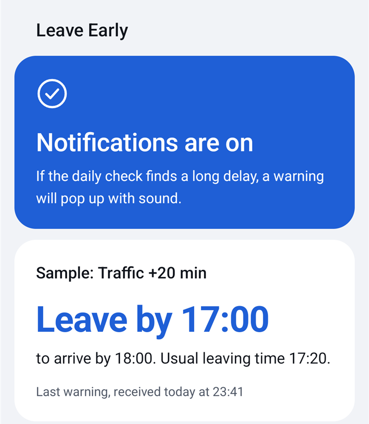

A warning to set off sooner, when traffic would make you late.
Leave by 17:00
Traffic +20 min
Android only. In early testing and not on Google Play yet, so there is nothing to download.
It speaks up only when the delay passes a limit
It checks your route once a day, ahead of when you need to go, comparing live traffic with a trip on clear roads.
If the delay reaches the limit, your phone pops up with a sound. The app doesn’t need to be open.
The warning gives you a time, not a map. When to leave, when you’ll arrive, and when you’d usually set off.
If the delay is under the limit, you hear nothing. The app keeps your last warning on one simple screen.

Where it is now
- Real traffic checks, and warnings on a real phone, are still being tested.
- Each phone can have up to two routes, set in the app.
- The addresses you enter are stored on the Leave Early server and sent to Google to check the traffic.
- It checks once a day, so it can’t warn about traffic that builds later.
- There’s no account or sign-in, and no ads or payments in this version.
- If a daily check fails, the app shows it when you open it, but nothing pops up. So no warning doesn’t always mean clear roads.